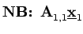
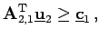
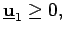

Inhalt Index DeskTop Bronstein

 Optimierung Lineare Optimierung Simplexverfahren Dualität in der linearen Optimierung
Optimierung Lineare Optimierung Simplexverfahren Dualität in der linearen Optimierung


Jeder linearen Optimierungsaufgabe (primales Problem) läßt sich umkehrbar eindeutig ein zweites Optimierungsproblem (duales Problem) zuordnen:
Primales Problem:
| (18.19a) |
|  | + | ||
| + | |||
| (18.19b) |
| (18.20a) |
| + |  | ||
| + | |||
|  | (18.20b) |